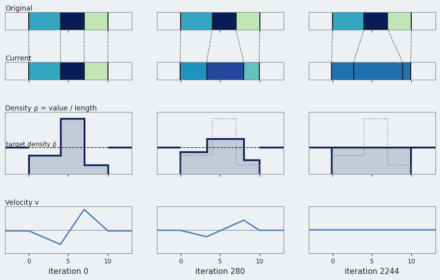
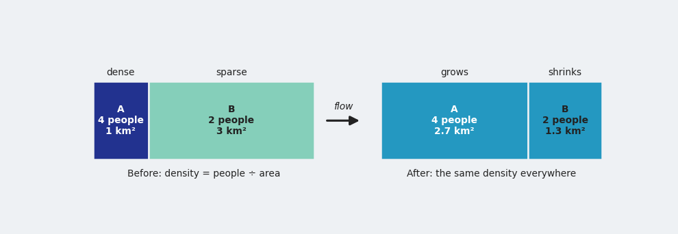
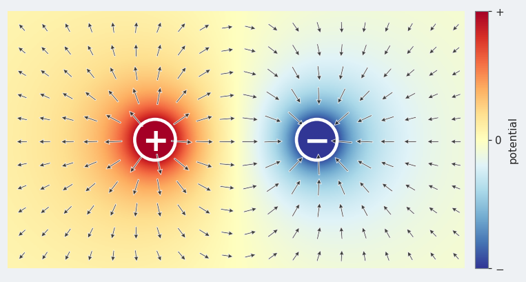

Three figures from the talk in the algorithm explanation, redrawn with the colors of the default plot style and generated by a script with NumPy and matplotlib alone: the diffusion idea, the electrostatic reading of the Poisson solve and a one-dimensional example of the loop.
The figures are in docs/diagrams and regenerated by docs/diagrams/make_flow_algorithm_figures.py. The page shows the diffusion idea as SVG; the figure here is a PNG of the same drawing.
| explanation | an Intuition subsection, a paragraph on the electrostatic reading in the velocity step, and a new section "A One-dimensional Example" |
| script | docs/diagrams/make_flow_algorithm_figures.py (default plot style colors, no solver calls) |
| left out | the loop schematic (the Mermaid pipeline covers it) and the animated one-dimensional example |
Docs build in CI (check-docs); the figures were checked by eye.

The loop on three regions of a line at iteration 0, on the way (280) and at convergence (2244): the regions, their density against the target density, and the velocity.

Intuition: a dense region grows and a sparse region shrinks until both have the same density.

The solve read as electrostatics: the density minus the mean is a charge, the velocity is the electric field, so points move away from the dense (positive) region and toward the sparse (negative) one.